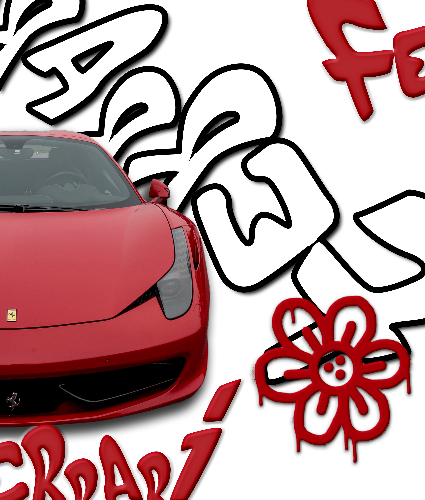
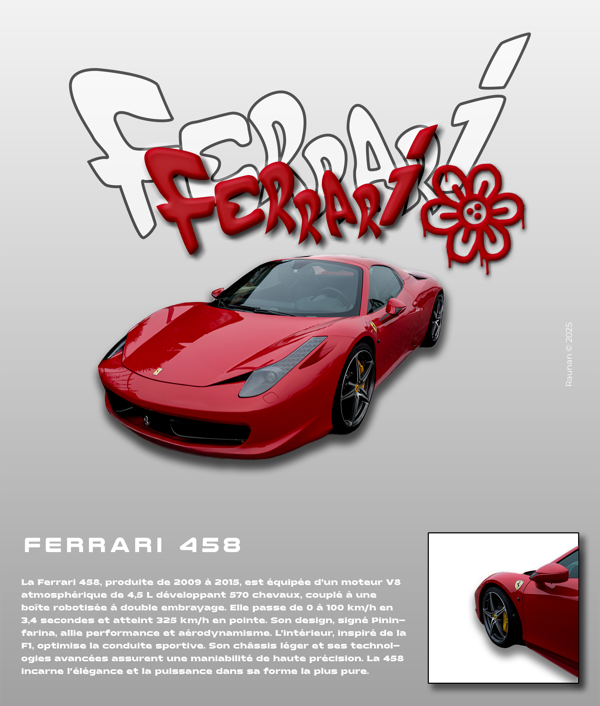

Ferrari 458 – Photographie & Direction Artistique
Ce projet est né d’une prise de vue réalisée en milieu urbain. J’ai photographié cette Ferrari 458 dans la rue, en cherchant à capturer ses lignes agressives et son caractère emblématique. Les images ont ensuite été retouchées et retravaillées sous Photoshop afin de développer une identité visuelle forte et cohérente.


À partir de ces photographies, j’ai conçu une fiche informative mettant en valeur les caractéristiques techniques et l’esthétique du modèle. L’objectif était de combiner photographie, retouche et mise en page pour créer un rendu visuel impactant et professionnel.

